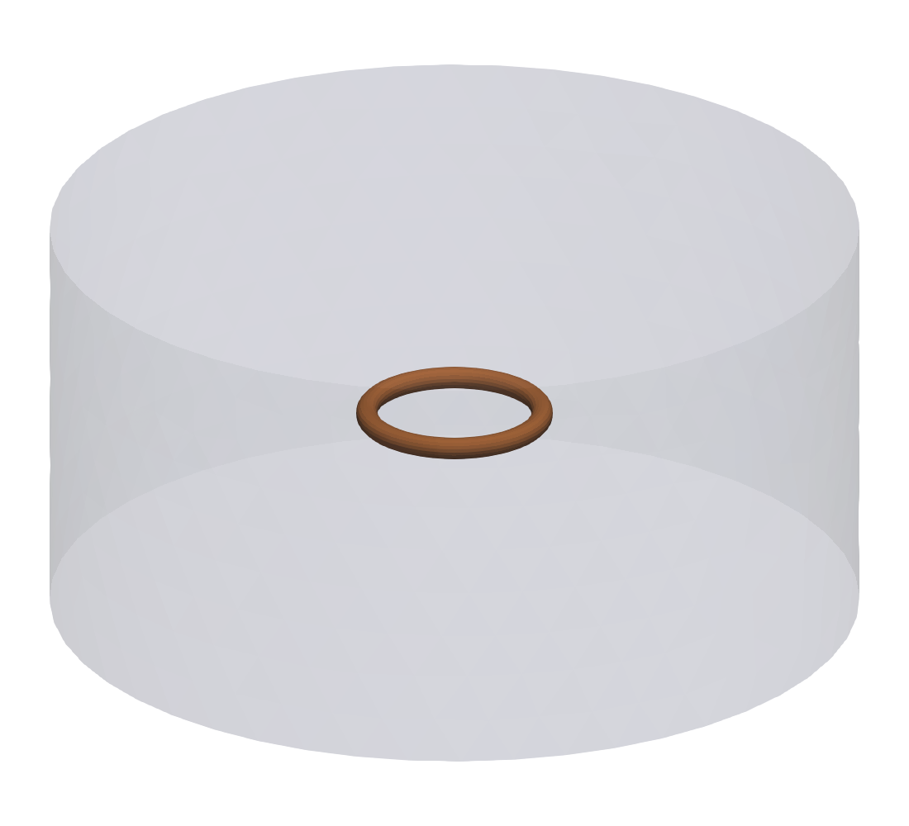
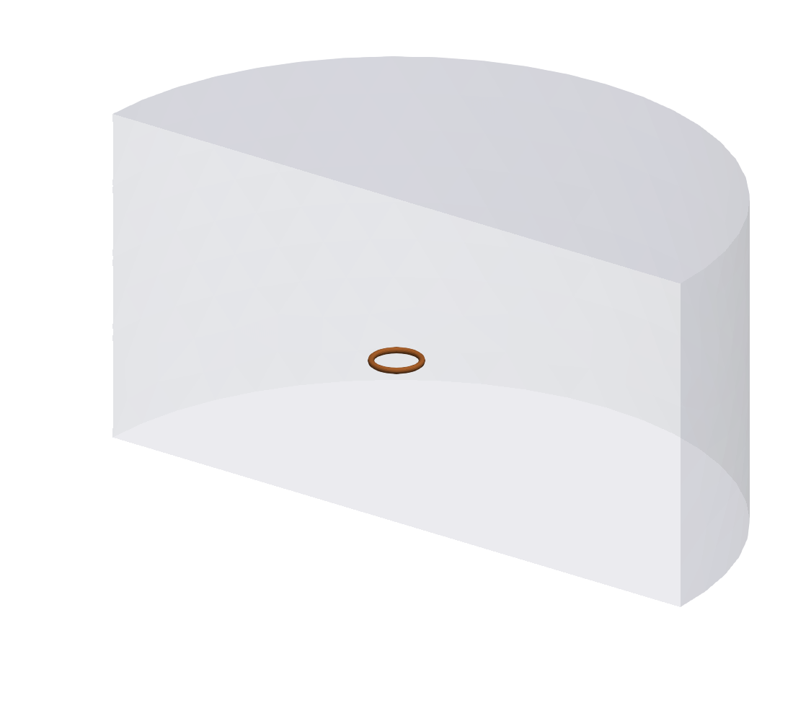
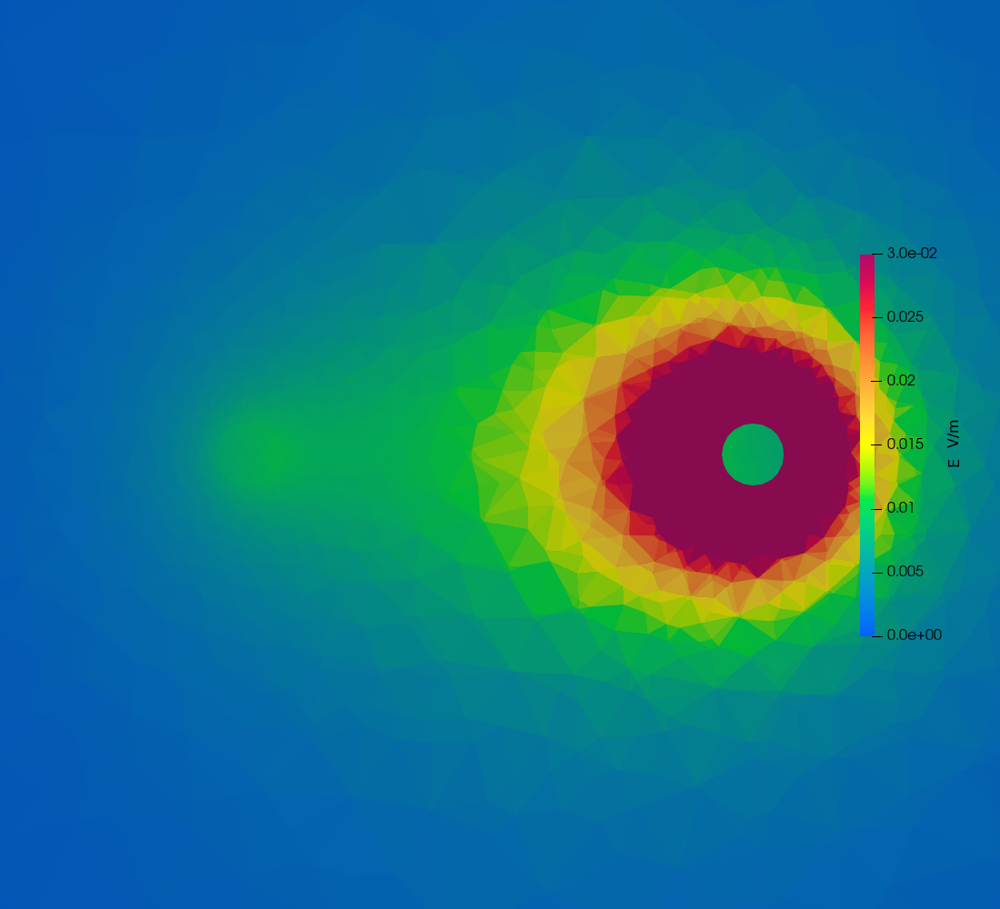
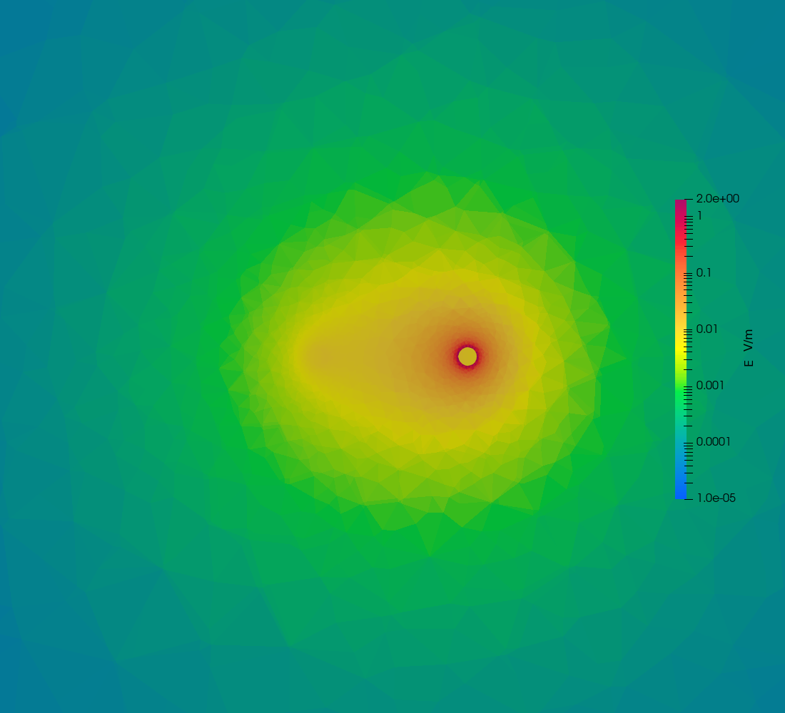
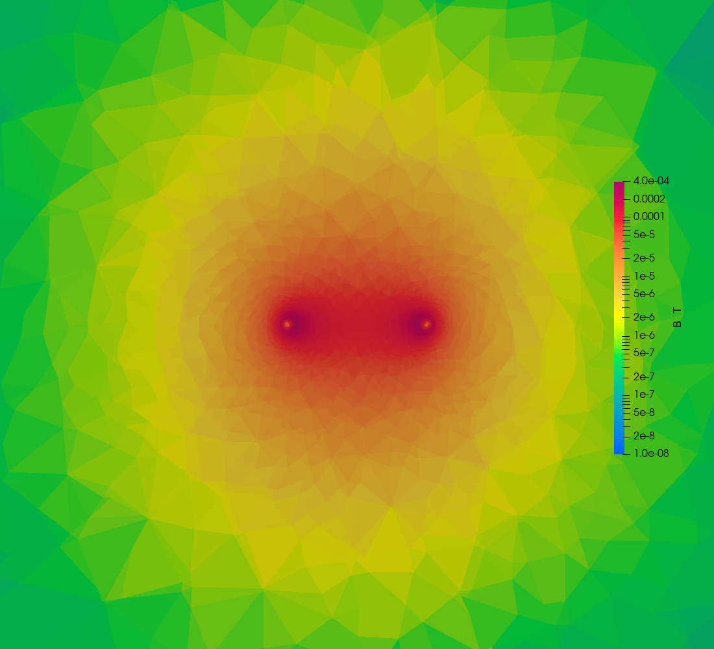
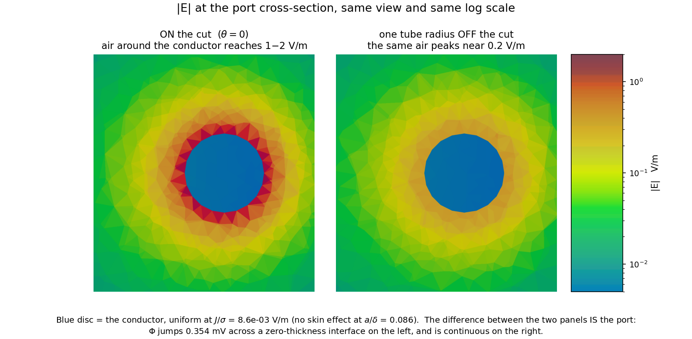
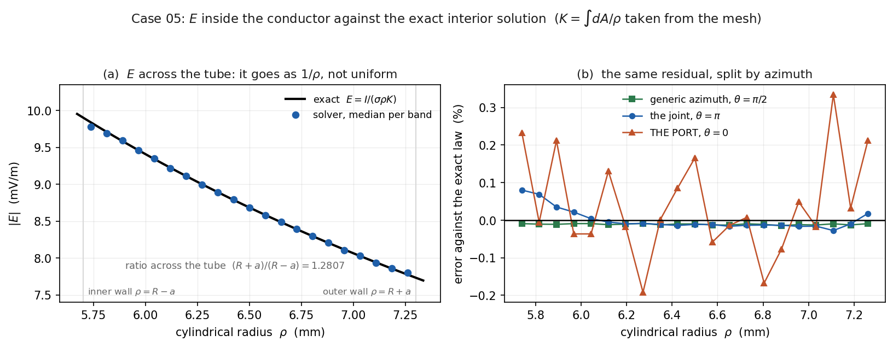
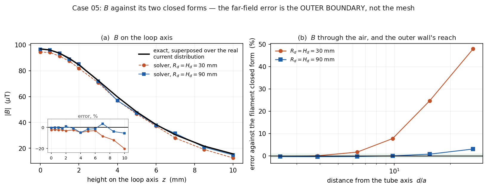

A conducting ring driven through an internal cut
Hybrid A‑Φ finite-element solver, tree‑cotree gauge. The first multiply connected case in the suite: the current circulates with no terminal anywhere on the outer boundary, so the ring can only be driven by cutting it.
0. What this case establishes
Cases 01–04 are all a straight rod. A rod is simply connected and the tree‑cotree gauge has nothing hard to do on one. A ring is multiply connected: the cotree has to span the loop, the current has to be able to go all the way round, and there is no outer surface to attach an electrode to. It can only be driven through a cut.
The check no other case can make. Inject 1 A across the cut, then measure the current crossing a plane where nothing is prescribed:
| measured | |
|---|---|
|I| through the cut, where 1 A is injected | 0.9999784 A |
|I| through θ = π/2, nothing prescribed | 1.000183 A |
The current circulates the whole way round. A gauge that wrongly killed the loop would show up there and in no other case in the suite.
Everything with a closed form, against it
This geometry is unusually well supplied with exact solutions, and §5 compares against all of them. The summary:
| quantity | reference | error |
|---|---|---|
E inside the conductor | exact, I/(σρK) | 0.016 % median, 0.03 % at the 90th pct |
R | exact, 2π/(σK) | −0.106 % |
B on the loop axis | exact, superposed over the real current | −2.51 % → −0.37 % |
B in the air, 2a–20a | filament, elliptic integrals | +24.7 % → inside ±0.75 % |
L | μ₀R[ln(8R/a) − 2 + ¼] | −2.15 % → −0.09 % |
The arrows are one change, not five. Everything that touches the field away from the ring was wrong by 2–25 %, all in a direction consistent with a flux‑excluding wall, because the air domain stops 2.3 loop radii out. Tripling it — at the same element count and the same 41 s — fixes all of them at once. §5.7 is the argument; §5.6 retracts an earlier test of mine that said the domain did not matter.
Inside the conductor, where the exact solution is a genuine closed form rather than a thin‑wire idealisation, the solver reproduces it to four significant figures in every one of 23,444 elements.
1. The case


y = 0, the plane the port sits on, so the ring is visible
rather than seen through the domain.| Conductor | copper, σ = 5.8e7 S/m; loop radius R = 6.5 mm, tube circumradius a = 0.8 mm, a 20‑gon cross-section revolved about z |
| Domain | cylinder of air, 30 mm radius, 30 mm tall, n × A = 0 on the outer boundary |
| Excitation | 1.0 A through the cut at θ = 0, 50 Hz |
| Skin depth | δ = 9.346 mm, so a/δ = 0.086 — no skin effect |
| Mesh | 38,248 nodes, 237,031 elements, Netgen-optimised |
| Measured | Z = 3.543192e‑04 + 6.087457e‑06 j Ω |
1.1 Where the dimensions came from
Not from a document. Two published closed forms, solved together against a reference impedance measured for this geometry:
L = μ₀ R [ ln(8R/a) − 2 + 1/4 ] round wire, uniform current
R = 6.5 mm with a = 0.8 mm reproduces the reference R to
1.3 % and L to 0.27 %, and agrees independently with dimensions measured off
the reference model's own scale bar — centreline diameter 1.23 cm, tube 1.4–2.0 mm.
The reference was run at 100 Hz, not 50. That was stated nowhere and falls
out of the same two equations. Im(Z)/ω is 19.75 nH at 100 Hz and
39.50 nH at 50 Hz, and no geometry consistent with the reported R can
give 39.50 nH. It does not matter for what this case checks: a/δ is 0.086 at
50 Hz and 0.121 at 100 Hz, so there is no skin effect either way and R and
L are frequency independent between them.
2. The potential

+z. It ramps smoothly
all the way round and falls off a cliff at the cut, at 3 o'clock.
This is the picture of what an internal cut actually does, and nothing in cases 01–04 looks like it. One side of the cut is the port's 0 V reference; the other floats to whatever the solve returns. That jump is the terminal voltage — 3.543192e‑04 V here, for 1 A, which is the impedance.
Φ is single-valued on each side: 193 nodes sit exactly on the cut plane and every one reads the same value, so the jump is a genuine discontinuity across a zero-thickness interface, not a gradient through a thin region.
3. The current

Look at the colour, not just the arrows. |J| is highest on the
inner radius — 5.8e5 against 4.4e5 A/m², a ratio of 1.32. That is not
noise: current flowing azimuthally takes a shorter path on the inside, so it crowds there.
(R+a)/(R−a) = 1.28, and the measured 1.32 is that effect.
It is also why the exact R below is not 2πR/(σA).
4. The fields
4.1 B in the xy plane


Three things in the zoomed view are worth naming, because each is a check. |B| has a
minimum at the tube axis — the wire's own field vanishes there. It peaks at the tube
surface, where Ampère gives μ₀I/(2πa) = 2.5e‑4 T. And the
inner surface is hotter than the outer, because the rest of the loop's field adds on the
inside and subtracts on the outside.
4.2 The port plane

y = 0 plane, which cuts the tube twice — at the
port (θ = 0, right) and at θ = π (left). Range pinned:
see the note in §4.3.Each conductor carries its own circulating field with a minimum on its axis, and the loop's hole between them is brighter than the outside — the two contributions add in there and oppose outside. This is the plane the cut is made on.
4.3 E in the xy plane, and a warning about colour ranges


Two earlier claims in this section were wrong and are withdrawn. The first was a
table of “median |E| inside the conductor / in the air / at the cut” taken as
volume medians over whole regions. Averaging |E| over a region that is not
homogeneous does not measure anything: in case 02 the same statistic is dominated by the rod's
end caps, where |E| reaches 197.8 V/m against 25 V/m in the body, and
here it mixes the port's neighbourhood with the far side of the ring, which differ by a factor of 50.
The second was the claim that the air's field exceeds the conductor's “in every other
case”, supported by a cross‑suite table built from those same volume medians. Both are
replaced below by measurements made on a stated plane, in a stated shell, on a stated side.
Measured on the y = 0 plane — the plane these figures actually cut — split
by side:
| shell around the tube | port side, x > 0 | joint side, x < 0 |
|---|---|---|
| inside the conductor | 0.00871 V/m | 0.00870 V/m |
air, 1.0–1.5a | 0.39797 | 0.00812 |
air, 1.5–2.5a | 0.09781 | 0.00671 |
air, 2.5–5a | 0.03413 | — |
Inside the conductor the two sides agree to 0.1 %, as they must: the same current flows through both. Outside, they differ by 49x. That difference is the port, and nothing else.
On the joint side the air's field is lower than the conductor's (0.00812
against 0.00870) once you are a half‑radius out. Right at the wall it is higher, as the boundary
condition requires — §5.8 measures 1.086x in a thin shell at 1.01–1.05a
— and it then decays outward. So there is no general rule that “the air's E
is larger”; there is a boundary condition at the wall and a decay away from it.
For comparison, case 02's rod measured the same way, on the mid‑height plane its own figure cuts:
median |E| | |
|---|---|
| inside the conductor | 24.935 V/m |
air, 1.0–2.5a | 24.600 |
air, 2.5–5a | 14.927 |
air, 5–10a | 9.257 |
| maximum anywhere on that plane | 25.307 |
On the plane the figure shows, case 02's air is not higher than its conductor — 24.6 against 24.9. The 55.7 V/m that the withdrawn table attributed to “air within 2.5a” was the volume median, set by the end caps the figure does not show.
Why the conductor reads blue here. It is the colour range, not the physics. These figures keep the air in frame and must span the cut spike at 1.72 V/m, so the conductor — three orders of magnitude below it — lands at the bottom of the scale. A figure thresholded to the conductor alone and auto‑ranged would show the same field spanning the whole colour map. Same data, different window.
The air's field is electrostatic, not −jωA — that
term is only 2.6e‑04 V/m here. The loop carries 0.354 mV from one side of the cut to
the other and that voltage appears across the surrounding air, strongest near the cut where the
gradient is.
The 1.72 V/m at the cut is a mesh artefact, not a field. It equals the potential jump divided by the local element size to within 3 %, so it diverges under refinement. §5.8 does the arithmetic.
Two ranges are pinned, and both had to be. On an auto range that one cut spike takes the whole colour map and everything else reads as flat blue, which is how this figure first came out. The port plane in §4.2 has the opposite problem: the slice spans the whole 30 mm domain while the view is zoomed to 12 mm, so an auto range is set by a far‑field minimum three decades below anything visible and the picture lands uniformly red.
4.4 E on the plane normal to the torus, through the port
“Normal to the torus” at θ = 0 means the plane whose normal is the
centreline tangent there, which is +y — so it is the y = 0 plane, and
that is the cut plane itself. It slices the tube twice: at the port on the +x
side, and at θ = π on the -x side.
How to read these. You are looking along -y at a vertical
plane containing the x and z axes. +x is to the right.
The plane crosses the tube twice — at x = +6.5 mm, which is the port, and at
x = −6.5 mm, which is just a joint where the two half-rings meet with no
potential difference across them. Only one of those two is a source, which is why only one is
bright.
| crossing | conductor |E| | air right around it |
|---|---|---|
x > 0, θ = 0 — the port | 0.008713 V/m | median 0.174, max 1.72 V/m |
x < 0, θ = π — a plain joint | 0.008703 V/m | median 0.0076, max 0.0099 V/m |
Inside the two conductors |E| is the same — 0.008713 against
0.008703 V/m, both J/σ, because the same current flows through both. Outside
them it differs by 23x. That difference is the port.

y = 0 plane, zoomed to the ring. The port is the
bright crossing on the right; the faint patch on the left is the joint at
θ = π.The same cut over the whole domain


E effect
only.The B figure is the control. A magnetic field does not care that Φ jumps, so both
tube crossings look alike there, and the two pictures side by side separate what the port does to
E from what the geometry does to everything.

Each panel alone is an unremarkable blob, which is why they are drawn in one frame rather than
merely adjacent: the eye has to compare them, and a shared colour bar is the only way that
comparison means anything. The blue disc is the conductor, uniform at J/σ because
a/δ = 0.086 leaves no skin effect to resolve. make_port_pair.py
composes it, sampling ParaView's own colour ramp out of the render rather than guessing a matplotlib
equivalent.
This slice lies exactly on a discontinuity, which is the point. Φ jumps
across the cut, so E = −jωA − ∇Φ does too: the whole
0.354 mV appears across a zero-thickness interface, and the adjacent air sees an enormous
gradient. B is continuous there and does not care, which is why §4.2's plot of the
same plane needs none of this care.
air shell hugging the tube, +x side | median |E| |
|---|---|
at the cut, |y| < 0.3a | 0.4207 V/m |
one tube radius off, 0.7a < |y| < 1.3a | 0.1708 V/m |
| two to three radii round | 0.0999 V/m |
| inside the conductor | 0.008584 V/m (J/σ) |
| global maximum, at the cut face | 1.7218 V/m — 200x the conductor |
The field falls by 2.5x within one tube radius of the cut and by 4.2x by two or three. Both zooms are log scaled: the view spans more than two decades, from the conductor's 8.6e‑03 to 1.7 V/m, and a linear range that resolves the conductor saturates every air cell around it into one flat colour.
5. Comparison with the analytical solutions
Every number in this section comes from analytic_comparison.py, which prints the whole
set in one run and derives each closed form in its docstring. Nothing here is hand‑copied from
a previous run.
"C:\Program Files\ParaView 6.1.1\bin\pvbatch.exe" analytic_comparison.py outputWhat has a closed form here, and what does not. This matters more than it sounds, because the place the fields look most dramatic — the cut — is exactly the place where no finite analytic value exists to compare against.
| quantity | closed form | status |
|---|---|---|
E inside the conductor | E(ρ) = I/(σρK) | exact |
R | 2π/(σK) | exact |
B on the loop axis | superposition over the real current | exact |
B anywhere in the air | filament, complete elliptic integrals | approximate, O((a/R)²) ≈ 1.5 % |
L | μ₀R[ln(8R/a) − 2 + ¼] | approximate, thin‑wire |
E in the air | — | none; only a bound at the wall |
E at the cut | diverges | none exists; see §5.8 |
K = ∫dA/ρ is the one quantity every exact form is built on. It is taken off the
mesh as (1/2π) ∫dV/ρ², which assumes nothing whatever about the
cross‑section's shape — not that it is a circle, not that it is a 20‑gon. For this
mesh K = 3.054192e‑04 m.
5.1 The interior solution, derived
Current flows azimuthally, so try Φ = Vθ/2π and check it:
- It conserves charge.
θis harmonic —∇²θ = 0in cylindrical coordinates — so∇²Φ = 0and∇·J = −σ∇²Φ = 0. - No current leaks through the wall.
∇Φ = (V/2π)(1/ρ) φ̂is purely azimuthal, and the tube wall is a surface of revolution whose normal lies in theρ–zplane. So∂Φ/∂n = 0on it identically.
Both conditions hold exactly, for any cross‑section shape, so this is the solution — not an approximation to it. Therefore
E is not uniform across the section; it goes as
1/ρ. Every filament at cylindrical radius ρ closes a path
of length 2πρ, and all filaments share the same terminal voltage V,
so the field along each is V divided by its own path length. The inner filaments have a
shorter path, so they carry more current: the current crowds toward the inner radius. Across
this tube the ratio is exactly
Integrating J over the section gives I = σVK/2π, hence
V = 2πI/(σK) and the two forms used below:
This holds while there is no skin effect to redistribute the current. Here
a/δ = 0.086, so there is none — case 04 is the case where that assumption is
deliberately broken.
5.2 E inside the conductor — exactly where it was compared
The comparison is made cell by cell, in the conductor only. Specifically: every
tetrahedron with body_tag = 1, taking its complex
E_cell_real/E_cell_imag at the tet centroid, forming
|E| = √(Re² + Im²), and dividing by I/(σρK)
evaluated at that same centroid's cylindrical radius ρ. The cells are then binned by
ρ and the median and 90th percentile of the relative error are reported per band.
No comparison is made in the air — there is no closed form there (§5.8).
The reason for splitting by azimuth as well as radius is that the discretisation has to carry a
discontinuity in Φ at the cut, and the question is whether the solution is
worse there.

1/ρ law with the solver's per‑band medians on
top of it. (b) the same data as a residual, split three ways: at the port, at the joint
diametrically opposite it, and at a generic azimuth that is neither.| region | ρ band | cells | median error | 90th pct |error| |
|---|---|---|---|---|
| whole conductor | 0.88–0.94R | 4480 | −0.013 % | 0.039 % |
| 0.94–1.00R | 6099 | −0.015 % | 0.031 % | |
| 1.00–1.06R | 6241 | −0.016 % | 0.028 % | |
| 1.06–1.12R | 6624 | −0.016 % | 0.029 % | |
| at the port, θ = 0 | 0.88–0.94R | 188 | +0.101 % | 0.785 % |
| 0.94–1.00R | 190 | −0.008 % | 0.803 % | |
| 1.00–1.06R | 188 | −0.034 % | 1.030 % | |
| 1.06–1.12R | 169 | +0.046 % | 1.419 % | |
| at the joint, θ = π | 0.88–0.94R | 182 | +0.026 % | 0.154 % |
| 0.94–1.00R | 194 | −0.010 % | 0.021 % | |
| 1.00–1.06R | 184 | −0.013 % | 0.022 % | |
| 1.06–1.12R | 185 | −0.015 % | 0.056 % | |
| generic azimuth, θ = π/2 | 0.88–0.94R | 341 | −0.010 % | 0.020 % |
| 0.94–1.00R | 459 | −0.011 % | 0.020 % | |
| 1.00–1.06R | 473 | −0.013 % | 0.020 % | |
| 1.06–1.12R | 503 | −0.011 % | 0.022 % |
Over the whole conductor the field is within 0.016 % of the exact law, and the 90th percentile is 0.03 % — that is the solver reproducing a closed form to four significant figures, everywhere, in 23,444 elements.
The port costs about a factor of fifty, and only in the spread. Its medians are still at the 0.01–0.1 % level, so there is no bias; what grows is the scatter, from a 90th percentile of 0.02 % at a generic azimuth to 1.42 % next to the cut. Narrowing to the 362 cells that actually touch the cut face:
cells touching the cut face (|y| < 0.12 mm, x > 0) | |
|---|---|
| count | 362 |
| median error | +0.037 % |
| worst single cell | +2.553 % |
That is the honest cost of representing a discontinuity with a finite element: one layer of cells
gets it wrong by a couple of per cent, the median is unbiased, and one element further in it is
gone. The joint at θ = π — geometrically identical, two half‑rings
meeting, but with no potential difference across it — sits at 0.02 %, which confirms the error
belongs to the cut, not to the mesh seam.
5.3 R — 0.11 %
| measured | 3.543192e‑04 Ω |
exact for this shape, 2π/(σK) | 3.546954e‑04 Ω |
| error | −0.106 % |
The exact value is not 2πR/(σA). That formula assumes every
filament has the same path length, and §5.1 shows they do not. Using it gives
3.560434e‑04 Ω, +0.380 % — nearly four times the solver's own error, and in
the opposite direction. The naive form is wrong because it ignores the 1/ρ
crowding.
The 2.5 % gap to the reference tool decomposes exactly: +1.61 % because our cross‑section is a 20‑gon with 1.64 % less area than a circle, and 0.91 % between the reference and the exact round‑torus value.
5.4 B on the loop axis — exact, no filament approximation
On the axis there is a closed form that uses the real current distribution, not a
thin‑wire idealisation. A circular filament of radius ρ carrying
I_f produces, on its own axis at axial distance d,
Superposing the tube's filaments, each carrying J(ρ) dA = I dA/(ρK), and
writing dA = dV/2πρ:
The integral runs over the conductor cells of the mesh, so this reference knows the actual
cross‑section and the actual 1/ρ current profile. It is exact.

B on the loop axis, with the residual inset because a 2 %
difference is invisible at this scale. (b) B through the air against the
filament closed form, for both domain sizes — this panel is the argument of
§5.7.z₀ (mm) | measured (T) | exact (T) | error | filament μ₀IR²/2(R²+z²)3/2 |
|---|---|---|---|---|
| 0.0 | 9.441475e‑05 | 9.684784e‑05 | −2.51 % | 9.666439e‑05 |
| 1.0 | 9.122770e‑05 | 9.349611e‑05 | −2.43 % | 9.333132e‑05 |
| 2.0 | 8.185121e‑05 | 8.451777e‑05 | −3.16 % | 8.439933e‑05 |
| 3.0 | 7.073297e‑05 | 7.241927e‑05 | −2.33 % | 7.235454e‑05 |
| 5.0 | 4.647239e‑05 | 4.812509e‑05 | −3.43 % | 4.813579e‑05 |
| 7.0 | 2.788965e‑05 | 3.041956e‑05 | −8.32 % | 3.045491e‑05 |
| 10.0 | 1.246147e‑05 | 1.561402e‑05 | −20.19 % | 1.564690e‑05 |
Two things to read off this. First, the error is one‑signed and grows with
z₀, which is the signature of the outer boundary, not of the mesh —
§5.7. Second, the last column shows the filament idealisation is worth 0.19 % at the
centre (9.666439e‑05 against the exact 9.684784e‑05): at a/R = 0.123 the
tube's thickness barely matters, which is what licenses §5.5.
5.5 B through the air — the filament's elliptic-integral form
Away from the wire the ring can be treated as a filament of radius R, and then
B is known in closed form everywhere, not just on the axis, through the complete
elliptic integrals K(m) and E(m):
B_z = (μ₀I/2π) Q−1/2 [ K(m) + E(m)(R²−ρ²−z²)/D ]
B_ρ = (μ₀I/2π)(z/ρ) Q−1/2 [ −K(m) + E(m)(R²+ρ²+z²)/D ]
K and E are evaluated by the arithmetic–geometric mean, which
reaches machine precision in about five iterations. The script checks this against itself
before using it: as ρ → 0 the pair must collapse to the on‑axis
formula μ₀IR²/2(R²+z²)3/2, and it does, to
1.8e‑14 relative.
Unlike §§5.1–5.4 this form is an approximation. It ignores the
tube's thickness, so it errs O((a/R)²) ≈ 1.5 %, and it diverges at
the ring. It is therefore used only outside 2a from the tube axis — and §5.4
measured how good it is there: 0.19 %.
The comparison is again cell by cell: every air cell (body_tag = 2) outside
2a, binned by distance d from the tube axis.
d/a | cells | median |B| (T) | filament (T) | median error | 90th pct | median h/d |
|---|---|---|---|---|---|---|
| 2–3 | 50184 | 8.895487e‑05 | 8.936921e‑05 | −0.31 % | 5.16 % | 0.21 |
| 3–5 | 39112 | 4.896760e‑05 | 4.885796e‑05 | −0.01 % | 6.76 % | 0.21 |
| 5–8 | 20568 | 2.191737e‑05 | 2.147050e‑05 | +1.64 % | 11.38 % | 0.21 |
| 8–12 | 11317 | 9.631397e‑06 | 8.849652e‑06 | +7.70 % | 21.02 % | 0.22 |
| 12–20 | 10115 | 4.480802e‑06 | 3.581520e‑06 | +24.69 % | 44.74 % | 0.22 |
| 20–35 | 6362 | 1.443252e‑06 | 8.536287e‑07 | +47.92 % | 111.21 % | 0.20 |
Near the wire this is very good — 0.01–0.31 % over 2a–5a.
Then it falls apart, and the last column is in the table to say why it is not the mesh:
h/d, the element size as a fraction of the distance being resolved, is flat at
≈0.21 across every band. The resolution is the same everywhere in relative terms while
the error grows by a factor of 150. That rules out discretisation and points at the boundary.
5.6 L — the closed form, and a retraction
For a thin circular loop in free space,
The bracket is the external inductance from the loop's own flux
(ln(8R/a) − 2) plus the internal term ¼ for uniform current
inside the wire. With R = 6.5 mm and a = 0.8 mm,
ln(8R/a) = ln 65 and L = 19.803 nH. Using the equal‑area
radius of the 20‑gon instead, a_eq = 0.79343 mm, gives 19.870 nH — so the
choice of which radius to call a is itself worth 0.34 %, and no comparison here is
meaningful below that.
| L | vs closed form (a = circumradius) | |
|---|---|---|
measured, R_d = H_d = 30 mm (shipped) | 19.377 nH | −2.15 % |
measured, R_d = H_d = 90 mm | 19.785 nH | −0.09 % |
| reference tool | 19.748 nH | −0.27 % |
| closed form, free space | 19.803 nH | — |
A previous version of this report said “the domain is ruled out: doubling it to
60 mm moved L by +0.2 %”. That was wrong, and it is retracted. The
mesh that test used still carried the +π/−π sweep bug of
§6.2, and it coarsened the far field so much that elements near the loop grew from
4 mm to 8.8 mm — so it changed two things at once and neither of them cleanly.
Repeating it properly, with the sweep bug fixed and the grading arranged so element size on the
axis matches the shipped mesh to within 10 %, moves L by +2.11 % and lands it
0.09 % from the closed form. The domain was the whole of it.
This is the second time in this case that “I ruled the domain out” turned out to rest on a test that changed something else as well. The lesson recorded here is the one about controls, not about loops.
Extracting L here is ill‑conditioned. ωL/R = 0.017: the
reactance is 1.7 % of the resistance, so Im(Z) is a small difference between large
numbers. Dividing by the measured current instead of the imposed 1 A lets that
current's own 0.02 % imaginary part into the answer and moves L by 1.3 % — fifty
times its own size. verify_loop.py divides by the imposed current.
5.7 Every far-field error has one cause: the outer boundary
Three independent measurements above are all off, all in a way that scales with distance from the ring, and all three are the same effect:
| observable | R_d = H_d = 30 mm | R_d = H_d = 90 mm |
|---|---|---|
B on the axis, at the loop centre | −2.51 % | −0.37 % |
L | −2.15 % | −0.09 % |
B in the air, d = 8–12a | +7.70 % | −0.06 % |
B in the air, d = 12–20a | +24.69 % | +0.73 % |
B in the air, d = 20–35a | +47.92 % | +3.02 % ← the new wall, 3x further out |
[boundary] outer = flux_tangential sets n·B = 0 on the domain
wall. That confines the return flux inside the domain and behaves like a flux‑excluding
shell — equivalently, an image loop carrying opposing current. The consequences all follow
from that one picture, and they have the signs observed:
- flux is pushed out of the middle of the ring →
Bon the axis reads low; - less flux links the loop →
Lreads low; - the excluded flux has to go somewhere, and it crowds along the wall →
Bout near the wall reads high.
At R_d = 30 mm the wall is 2.3 loop radii out, which is simply too close. Panel (b)
of the figure above is the whole argument in one frame: the orange curve is the shipped domain, the
blue one is three times larger, and over 2a–20a the blue sits inside
±0.75 % against a closed form spanning four decades of field strength.
The larger domain costs nothing. loop_big.geo grades the far field so
the tet count lands at 230,569 against the shipped mesh's 223,879, and the solve takes 41.2 s against
43.9 s. It is not shipped as the default only because every figure in §§2–4 is framed
on the 30 mm domain; the recommendation is recorded here rather than acted on:
../run_case.bat loop_50hz_big.aphi
"C:\Program Files\ParaView 6.1.1\bin\pvbatch.exe" analytic_comparison.py output_big5.8 Where there is no closed form
Two places in this problem have no analytic value to compare against, and both are places the pictures in §4 draw the eye to.
At the tube wall there is a bound, not a value. E_tangential is
continuous across any interface and E_normal jumps by the surface charge, so
|E| just outside a current‑carrying conductor is ≥ |E| just
inside — always. Measured in thin shells at θ = π ± 14°, away
from the port:
median |E| | cells | |
|---|---|---|
just inside, 0.95a < d < 0.99a | 8.566634e‑03 V/m | 51 |
just outside, 1.01a < d < 1.05a | 9.299954e‑03 V/m | 66 |
| ratio | 1.086 | — |
The ratio is ≥ 1 as it must be. Its value would require solving the exterior problem, which is what the FEM is for; there is nothing to check it against. Note that “the field is highest inside the conductor” is not a law — the opposite is, as this measurement shows.
At the cut the analytic answer is that E diverges. A finite voltage
across a zero‑thickness interface is a singularity: there is no finite number there, and what
the solver returns is set by the local element size.
peak |E| in air | 1.7218 V/m, at 1.04a from the tube axis |
local element size h | 0.2001 mm |
V/h | 1.7724 V/m |
| ratio peak / (V/h) | 0.97 |
The spike is the potential jump spread over one element. It scales as 1/h and
never converges, so quoting “1.72 V/m, 200x the conductor” as a result — as an
earlier version of this report did — is meaningless without naming the mesh. Refine the cut
region and the number goes up.
6. The mesh, and two bugs found building it


6.1 An OCC Torus will not mesh with a cut in it
The obvious construction — an OpenCASCADE Torus, cut, fragmented against the
air — fails with “Invalid boundary mesh (overlapping facets)”: a curved torus
face overlapping itself. That was tried eight ways: partial tori welded with
Coherence, cuts by oversized discs, by exact-size discs, by thin boxes, cuts moved off
the parametric seam, the seam rotated away from the cuts, the air fragmented before and after the
cut. Every one failed identically.
Revolving a polygon has none of that trouble, and it is what this project does for every
other conductor anyway, because planar lateral faces make ∂Φ/∂n = 0 hold
exactly.
Note also that a ring needs two cuts. Cut in one place it is still one connected volume, because the current can go round the other way.
6.2 One +π sweep and one −π sweep is wrong in a way that is easy to miss
The ring was first revolved as one +Pi extrude and one -Pi extrude. It
meshes, it passes every check, and both halves come out with the right volume — 40.386
against 40.307 mm³, equal to 0.2 %. But:
| tets | mean h | volume | |
|---|---|---|---|
+Pi half | 11,621 | 0.302 mm | 40.386 mm³ |
-Pi half | 4,557 | 0.373 mm | 40.307 mm³ |
Half the conductor was quietly meshed two and a half times coarser. It showed up as a ragged lower half in the field plots, and was measured before it was believed. Chaining two positive sweeps — the second starting from the first's end face — gives a count ratio of 0.988.
And it moved the physics. L went 19.038 → 19.377 nH,
closing 1.87 of the 4.02 points of the gap to theory. It also retracts an earlier conclusion
recorded in this case: that refining the tube moved L the wrong way, so resolution was
not the cause. That test refined lc_ring globally while half the ring stayed coarse, so
it was measuring the wrong thing. Resolution is part of it.
7. What is asserted automatically
check.bat runs this case through verify_loop.py, not
../verify.py: the rod verifier finds the drive by differencing Φ between two end
caps, and a ring has none. A case-local verify_*.py wins where one exists.
|I| through the cut | 0.9999784 vs 1.0, tol 1e‑3 |
|I| at θ = π/2 | 1.000183 vs 1.0, tol 1e‑3 |
R vs exact for this shape | 0.99894 vs 1.0, tol 2e‑3 |
L | 19.377 nH, tol 0.05 — a regression guard, not a validation; §5.6 |
Reproducing
gmsh loop.geo -3 -o loop.msh
..\run_case.bat loop_50hz.aphi
"C:\Program Files\ParaView 6.1.1\bin\pvbatch.exe" make_plots.py output
"C:\Program Files\ParaView 6.1.1\bin\pvbatch.exe" make_port_pair.py
"C:\Program Files\ParaView 6.1.1\bin\pvbatch.exe" verify_loop.py
"C:\Program Files\ParaView 6.1.1\bin\pvbatch.exe" analytic_comparison.py output
"C:\Program Files\ParaView 6.1.1\bin\pvbatch.exe" make_analytic_plots.py
sh build_doc.shAnd the larger domain, which §5.7 rests on — same tet count, same runtime, and it needs
make_analytic_plots.py re‑run afterwards for the second curve in
fig/analytic_B.png to appear:
gmsh loop_big.geo -3 -o loop_big.msh
..\run_case.bat loop_50hz_big.aphi
"C:\Program Files\ParaView 6.1.1\bin\pvbatch.exe" analytic_comparison.py output_bigloop_big.geo is that 90 mm domain. It was a 60 mm one used for a boundary
test that concluded the domain did not matter; that test was wrong and §5.6 retracts
it, so the file has been rebuilt from the current loop.geo with only the domain size
and the grading changed. Run build_doc.sh after regenerating figures, or this
document keeps showing the previous run's pictures — they are baked in.